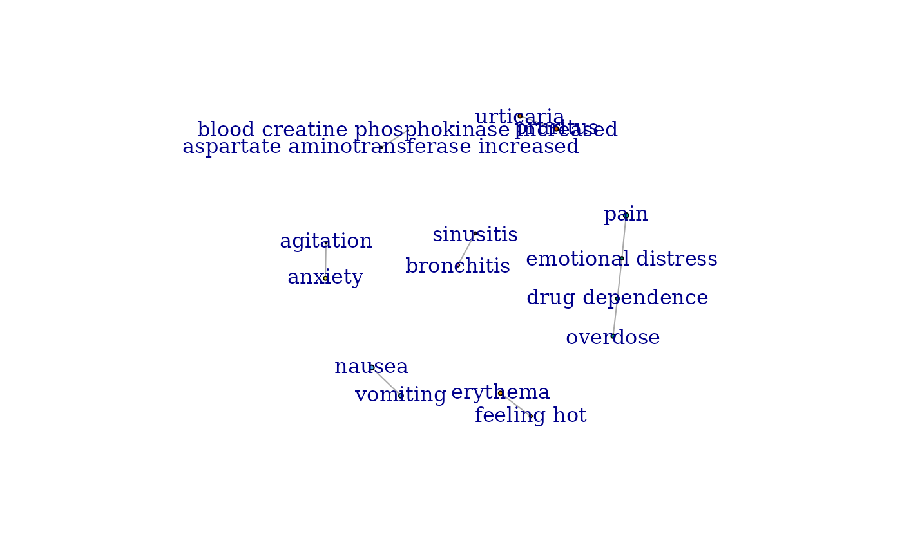
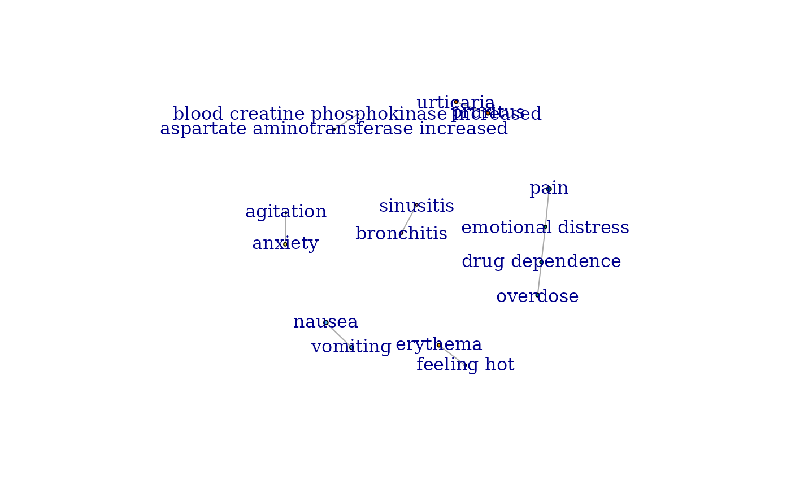

This function performs network analysis on the provided data and generates a visualization of the network. It uses IsingFit to model the network structure, clusters nodes using Louvain method, and visualizes the resulting network graph.
Usage
network_analysis(
pids,
entity = "reaction",
remove_singlet = TRUE,
remove_negative_edges = TRUE,
file_name = paste0(project_path, "network.tiff"),
width = 1500,
height = 1500,
labs_size = 1,
min_frequency_term = 0.01,
restriction = "none",
temp_reac = Reac,
temp_indi = Indi,
temp_drug = Drug,
save_plot = TRUE
)Arguments
- pids
Numeric vector of unique identifiers on which the network analysis should be performed.
- entity
Character specifying the type of entity to analyze ("reaction", "indication", or "substance").
- remove_singlet
Logical indicating whether to remove singleton nodes (nodes with no edges). Default is TRUE.
- remove_negative_edges
Logical indicating whether to remove edges with negative weights. Default is TRUE.
- file_name
Character string specifying the file name (including path) to save the network visualization. Default is "network.tiff".
- width
Numeric specifying the width of the saved image in pixels. Default is 1500.
- height
Numeric specifying the height of the saved image in pixels. Default is 1500.
- labs_size
Size of labels in network visualization. Default is 1. It can be changed if visualization is not good.
- min_frequency_term
Frequency threshold for a term in the dataset to be included in the analysis. Default to 0.01
- restriction
Restriction performed in the analysis. Default is none. It could be set to 'suspects' if entity is 'substance' to restrict the analysis to primary and secondary suspects
- temp_reac
Reac dataset. Can be set to sample_Reac for testing
- temp_indi
Indi dataset. Can be set to sample_Indi for testing
- temp_drug
Drug dataset. Can be set to sample_Drug for testing
- save_plot
Whether the plot should be saved as a tiff. Defaults to true
References
Fusaroli M, Raschi E, Gatti M, De Ponti F, Poluzzi E. Development of a Network-Based Signal Detection Tool: The COVID-19 Adversome in the FDA Adverse Event Reporting System. Front Pharmacol. 2021 Dec 8;12:740707. doi: 10.3389/fphar.2021.740707. PMID: 34955821; PMCID: PMC8694570.
Fusaroli, M., Polizzi, S., Menestrina, L. et al. Unveiling the Burden of Drug-Induced Impulsivity: A Network Analysis of the FDA Adverse Event Reporting System. Drug Saf (2024). https://doi.org/10.1007/s40264-024-01471-z
Examples
# Perform network analysis for reactions with specified pids
net_plot <- network_analysis(
pids = sample_Demo$primaryid,
entity = "reaction", temp_reac = sample_Reac,
save_plot = FALSE
)
#>
|
| | 0%
|
| | 1%
|
|= | 1%
|
|= | 2%
|
|== | 2%
|
|== | 3%
|
|=== | 4%
|
|=== | 5%
|
|==== | 5%
|
|==== | 6%
|
|===== | 6%
|
|===== | 7%
|
|===== | 8%
|
|====== | 8%
|
|====== | 9%
|
|======= | 9%
|
|======= | 10%
|
|======= | 11%
|
|======== | 11%
|
|======== | 12%
|
|========= | 12%
|
|========= | 13%
|
|========== | 14%
|
|========== | 15%
|
|=========== | 15%
|
|=========== | 16%
|
|============ | 17%
|
|============ | 18%
|
|============= | 18%
|
|============= | 19%
|
|============== | 19%
|
|============== | 20%
|
|============== | 21%
|
|=============== | 21%
|
|=============== | 22%
|
|================ | 22%
|
|================ | 23%
|
|================= | 24%
|
|================= | 25%
|
|================== | 25%
|
|================== | 26%
|
|=================== | 27%
|
|=================== | 28%
|
|==================== | 28%
|
|==================== | 29%
|
|===================== | 29%
|
|===================== | 30%
|
|===================== | 31%
|
|====================== | 31%
|
|====================== | 32%
|
|======================= | 32%
|
|======================= | 33%
|
|======================== | 34%
|
|======================== | 35%
|
|========================= | 35%
|
|========================= | 36%
|
|========================== | 37%
|
|========================== | 38%
|
|=========================== | 38%
|
|=========================== | 39%
|
|============================ | 39%
|
|============================ | 40%
|
|============================ | 41%
|
|============================= | 41%
|
|============================= | 42%
|
|============================== | 42%
|
|============================== | 43%
|
|============================== | 44%
|
|=============================== | 44%
|
|=============================== | 45%
|
|================================ | 45%
|
|================================ | 46%
|
|================================= | 47%
|
|================================= | 48%
|
|================================== | 48%
|
|================================== | 49%
|
|=================================== | 49%
|
|=================================== | 50%
|
|=================================== | 51%
|
|==================================== | 51%
|
|==================================== | 52%
|
|===================================== | 52%
|
|===================================== | 53%
|
|====================================== | 54%
|
|====================================== | 55%
|
|======================================= | 55%
|
|======================================= | 56%
|
|======================================== | 56%
|
|======================================== | 57%
|
|======================================== | 58%
|
|========================================= | 58%
|
|========================================= | 59%
|
|========================================== | 59%
|
|========================================== | 60%
|
|========================================== | 61%
|
|=========================================== | 61%
|
|=========================================== | 62%
|
|============================================ | 62%
|
|============================================ | 63%
|
|============================================= | 64%
|
|============================================= | 65%
|
|============================================== | 65%
|
|============================================== | 66%
|
|=============================================== | 67%
|
|=============================================== | 68%
|
|================================================ | 68%
|
|================================================ | 69%
|
|================================================= | 69%
|
|================================================= | 70%
|
|================================================= | 71%
|
|================================================== | 71%
|
|================================================== | 72%
|
|=================================================== | 72%
|
|=================================================== | 73%
|
|==================================================== | 74%
|
|==================================================== | 75%
|
|===================================================== | 75%
|
|===================================================== | 76%
|
|====================================================== | 77%
|
|====================================================== | 78%
|
|======================================================= | 78%
|
|======================================================= | 79%
|
|======================================================== | 79%
|
|======================================================== | 80%
|
|======================================================== | 81%
|
|========================================================= | 81%
|
|========================================================= | 82%
|
|========================================================== | 82%
|
|========================================================== | 83%
|
|=========================================================== | 84%
|
|=========================================================== | 85%
|
|============================================================ | 85%
|
|============================================================ | 86%
|
|============================================================= | 87%
|
|============================================================= | 88%
|
|============================================================== | 88%
|
|============================================================== | 89%
|
|=============================================================== | 89%
|
|=============================================================== | 90%
|
|=============================================================== | 91%
|
|================================================================ | 91%
|
|================================================================ | 92%
|
|================================================================= | 92%
|
|================================================================= | 93%
|
|================================================================= | 94%
|
|================================================================== | 94%
|
|================================================================== | 95%
|
|=================================================================== | 95%
|
|=================================================================== | 96%
|
|==================================================================== | 97%
|
|==================================================================== | 98%
|
|===================================================================== | 98%
|
|===================================================================== | 99%
|
|======================================================================| 99%
|
|======================================================================| 100%
 #> Joining with `by = join_by(s)`
plot(net_plot)

#> Joining with `by = join_by(s)`
plot(net_plot)
